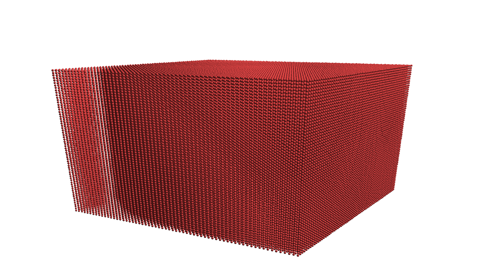

Vibe-coding a particle solver
May 6, 2026
The other day, a postdoctoral fellow presented her work on sedimenting particles in the Stokes regime 1. If this doesn't make sense to you, think of tiny objects like sand falling in a very viscous liquid. The video was beautiful, a round cloud transforming into a torus, before it breaks due to instabilities. I thought I would code this up and see whether I could reproduce the same behavior with more particles.
The physics is relatively simple. The fluid is so viscous that inertia is negligible, and we end up with the Stokes equations, where is the fluid viscosity, its velocity, the local force acting on the fluid, and the pressure. Usually the force is the "input" that creates motion in the fluid, and boundary conditions (on solid walls, deforming biological cells, arteries, or sand particles) can also be represented through . Since the Stokes equation is linear, the solution corresponding to the sum of two force fields is simply the sum of their individual solutions. So this means that all we need, in theory, is to know the fundamental solution of the Stokes equation, where is now a point force and is the Dirac distribution. The solution of this equation is given by , where is a tensor called Stokeslet:
Long story short, the Stokeslet is a Green function that allows to compute a velocity field caused by a sum of point forces. Exactly what is needed for the sedimenting particles: each particle exerts a point force on the fluid, due to gravity (and buoyancy). The contribution of all particles creates a flow field. In turn, the particles are advected according to this flow field.
It now becomes a computational problem. For particles, there are pairwise interactions. This quickly becomes expensive, but there are methods (using octrees) to reduce the complexity to , and I have never done it for this type of system before.
Since I do it for fun, I thought it would be the perfect occasion to test ChatGPT's ability to create some C++ code. I have rather strong opinions on the design of computational programs; here are a few requirements:
- there should be as few dependencies as possible to avoid spaghetti code.
- test-driven development. Every critical function should be tested whenever possible.
- functions should have a clear interface that shows what is input/output.
- computational functions should not allocate memory if it can be preallocated, for performance reasons.
- the above point means I prefer to pass
std::spanas much as possible rather thanstd::vector; this also allows to pass subarrays. - separation of concern: independent code for time integration, kernels, initialization, rendering, I/O.
I described all this to ChatGPT and started with a rendering module to visualize particles. It is very simple: each particle is rendered as a disc on the screen with some shader that mimics light. Here is the result for a few particles organized on a lattice:

I'm happy with this, it will allow me to do in-situ visualization, no need for an external program to view the particles' trajectories.
First I wanted to reproduce the case I saw in the talk: 2,000 particles grouped in a small region. The direct approach () is enough for that case, so I just vibe-coded a very simple interaction kernel, as well as a second-order Runge-Kutta time integration. After adjusting a few parameters and the camera position (I had to fight a lot with ChatGPT to make it look realistic), I obtained the following dynamics:
The cloud first transforms into a torus, and then breaks up. Does this instability persist for larger numbers of particles?
I decided to run the same case at a larger scale (let's do 50,000 particles, because why not) but still on my laptop. Since the direct, quadratic method doesn't scale, I asked ChatGPT to code up the Barnes-Hut method. The first iteration didn't work at all, it took several iterations using unit tests and benchmarks to obtain something acceptable. The code now had an octree-building part followed by a Stokeslet evaluation using a dipole approximation for nodes of the trees that are far enough. The complexity of the computation went down to , which now allows to simulate this 50,000-body problem. After tweaking a few parameters, this is what I ended up with:
This took only a couple hours on my laptop. We still observe the same behavior: an initial transition to a torus, until the torus breaks up. But now, after the breakup, the newly formed droplets undergo the same process again, transforming into smaller toruses. My guess is that this process would keep going recursively if we had a high enough resolution. Maybe it is even scale-invariant. But I would need to use more cores to simulate such systems, and given how difficult it was for the LLM to code this small tree-based program I doubt that I can properly vibe-code this. We'll either wait for a rainy weekend or the next version of LLMs.